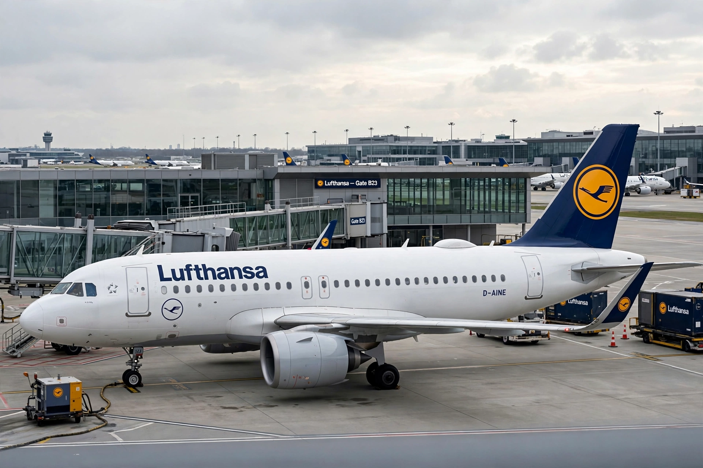

| Airbus A320neo family | |
|---|---|
| Manufacturer | Airbus |
| First flight | September 25, 2014 |
| Introduction | January 25, 2016, with Lufthansa |
| Status | In production, in service |
| Primary users | IndiGo, Wizz Air, Frontier Airlines, easyJet |
| Variants | A319neo, A320neo, A321neo (incl. A321LR, A321XLR) |
| Developed from | Airbus A320 family |
| Developed into | Airbus A220 (separate programme, acquired) |
The Airbus A320neo family is a development of the A320 family of narrow-body airliners produced by Airbus. Launched on December 1, 2010, the neo ("new engine option") series features more fuel-efficient engines — the CFM International LEAP-1A or the Pratt & Whitney PW1100G-JM geared turbofan — along with aerodynamic improvements including standard Sharklet wingtip devices. Airbus claims up to 20% better fuel burn per seat than the previous generation.

The A320neo made its first flight on September 25, 2014, from Toulouse. Following certification, the first aircraft was delivered to Lufthansa, which began commercial service on January 25, 2016, between Frankfurt and Munich. Early PW1100G-powered aircraft suffered start-up and durability issues that temporarily slowed deliveries; the LEAP-1A variant entered service with Pegasus Airlines in 2016.
The family comprises the shortened A319neo, the baseline A320neo, and the stretched A321neo. The A321neo became the family's best-seller, with the long-range A321LR (2018) and the extra-long-range A321XLR — featuring a permanent rear centre fuel tank and range of about 4,700 nautical miles, certified and introduced in 2024 — opening thin transatlantic routes previously requiring wide-body aircraft. The A321neo accounts for the majority of the family's order backlog, which, together with the A320neo, has exceeded 10,000 orders, making it the fastest-selling airliner family in history and surpassing the rival Boeing 737 MAX in orders.
Major operators include IndiGo (the largest customer), Wizz Air, Frontier Airlines, easyJet, China Southern Airlines and Lufthansa Group carriers. Production takes place in Toulouse, Hamburg, Mobile (Alabama) and Tianjin.